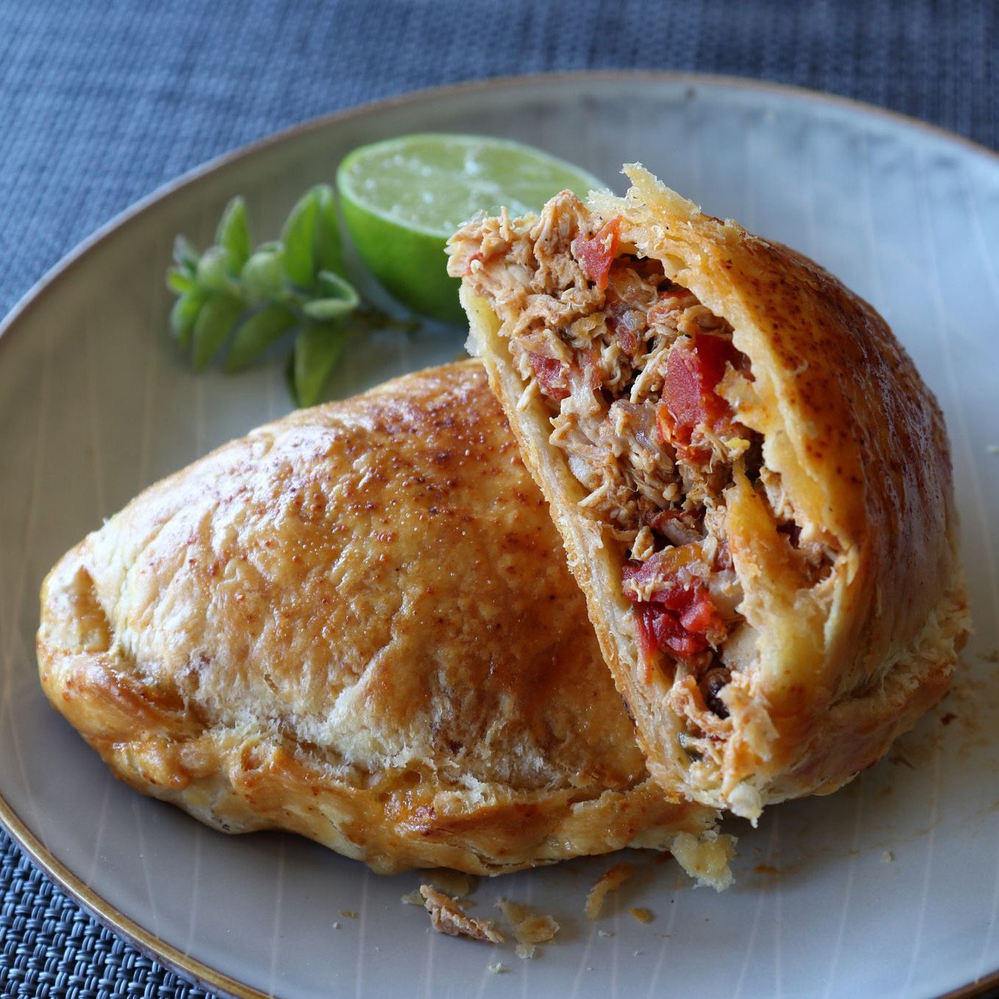

Chicken Empanadas Recipe

Description
I'm showing you how to make what is one of the world's greatest meat-filled pastries. Or, it can be, if you avoid the three most common mistakes: empanadas that are under-seasoned, under-filled, and under-cooked. But, if you use the following technique, you'll avoid all of those issues, no matter what kind of filling you use!
Ingredients
- 2 tablespoons olive oil
- 1 yellow onion, diced
- 1/2 cup diced poblano pepper
- 4 cloves garlic, chopped
- 1 teaspoon kosher salt
- 1/2 teaspoon freshly ground black pepper
- 1 1/2 teaspoons ground dried chipotle peppers
- 1/2 teaspoon ground cumin
- 1/4 teaspoon dried Mexican oregano
- 1 pinch cayenne pepper, or to taste
- 3 cups diced cooked chicken
- 2 tablespoons dried currants
- 2 (10 ounce) cans diced tomatoes with green chilli peppers (Such as RO*TEL)
- 1/3 cup water
- 3/4 cup grated pepper Jack cheese
- 1 large egg, beaten
- 2 teaspoons of water
For the Dough
- 3 cups all-purpose flour
- 1 1/2 teaspoons kosher salt
- 1 teaspoon white sugar
- 12 tablespoons cold unsalted butter
- 1 large egg, beaten
- 1/3 cup cold water, or as needed